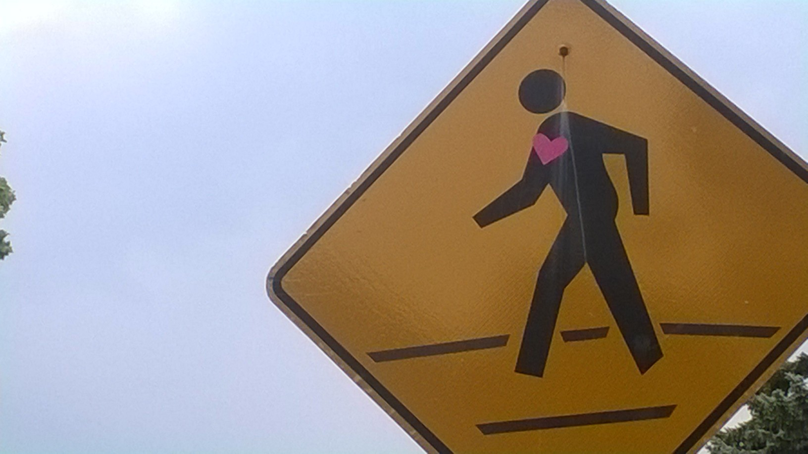
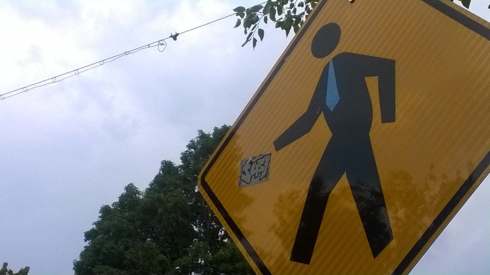

GUERILLA STREET ART
Cambridge, MA
Summer 2015
I planned and executed these two projects with my good friend and summer roommate, Celine Ta.
PROJECT I.: MODICA WAY SPRAYPAINTING
Modica Way is Central Square's ever-changing street gallery for the public, by the public. This alley was en-route to my summer workplace, so I passed it twice-daily.
One time, I saw this image being executed. I particularly liked how the artist - a freelance photographer, as I discovered through conversation - created depth and shadow by using multiple makeshift stencils (overhead transparencies with cutouts). Yet despite the detail of the armyman's uniform, his face was intentionally a single-color smear to capture how removed we are from war.
One weekend in July, in two hours, my roommate and I left this:

MESSAGE: My roommate and I weren't smartphone users, and so we noticed how a majority of the people we passed to and from work were so engrossed with whatever was on their pocket computers. We felt that this smartphone addiction was increasing how out-of-touch people were with their environments. Live music and free food samples were all ignored.
EXECUTION: This scaled up iPhone 5 measures 9' across. Straight lines were guided by a length of string and two strips of tape and created by spraying on one side of a flattened cardboard box. For the rounded edges, we used scaled-up cardboard quarter-circles that we measured and cut ourselves. We also had cutouts for the button and the speaker.
MY COMMENTARY: Although we were awed by Modica Way's blast of color, we intentionally chose white and dark grey to throw what we were conveying into stark relief. I wish there were a paint that could decrease the color saturation of whatever surface it is applied upon. If we had that, I would have opted to desaturate 2' all around the phone to further underscore how dull the real-world seems to the smartphone-addicted.
PROJECT I.I.: DECORATING STREET SIGNS
In August, we added character to ~30 pedestrian crossing street signs in the residential areas of Central Square and Porter Square.
We weren't trying to make any sort of statement with this project, but we were curious about a few matters. Would people notice us? How would they react?

EXECUTION
MY COMMENTARY